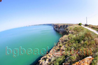
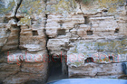

Kaliakra
Cape Kaliakra is an interesting historical place. There can be found the medieval fortress of Kaliakra. There is a legend about it which tells about 40 Bulgarian girls, who preferred to tie their hair together and jump into the Black Sea instead of the prospect to be captured by the Ottomans.
Fort
Road to the sea
Snakes
Obelisk
Monument
Oriental
Tapestry
Church remains
Hardly Accessible
Shag and Dolphins
Forbidden for cars
Inside the fort
Wind Turbines- 
Shore
Pavement- 
Holes in rocks
Wall
Museum
Model
The model from above
Tourist
Well maintained
Military base
Chapel
End
Don't Jump
Small details
The other end
Tourists